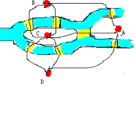
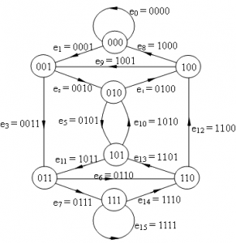

基本概念及定理
1.无向图的欧拉通路，欧拉回路，欧拉图
（1）设G是无向图，则称经过G的每条边一次并且仅一次的路径为欧拉通路。
（2）如果欧拉通路是回路，即起点和终点是同一个顶点，则称此回路为欧拉回路。
（3）具有欧拉回路的无向图为欧拉图。
2.有向图的欧拉通路，欧拉回路，欧拉图
（1）设D是有向图，D的基图连通，则称经过D的每条边一次且仅经过一次的有向路径为有向欧拉路径。
（2）如果有向欧拉通路是有向回路，则称此有向回路为有向欧拉回路。
（3）具有有向欧拉回路的有向图D称为有向欧拉图。
3.定理
（1）无向图G存在欧拉通路的充要条件是：G为连通图，并且G仅有两个奇度结点或者没有奇度结点。
定理（1）得出的三个推论：
（1.1）当G是仅有两个奇度结点的连通图时，G的欧拉通路必定以这两个顶点为端点。
（1.2）当G是无奇度结点的连通图时，G必有欧拉回路。
（1.3）G为欧拉图（存在欧拉回路）的充分必要条件是：G为无奇度结点的连通图。
（2）有向图D存在欧拉通路的充要条件是：D为有向图，D的基图连通，并且所有顶点的出度入度都相等；或者除了两个顶点外，其余顶点的入读出度都相等，而这两个顶点中，一个顶点的入度比出度多一，另一个顶点的出度比入度多一。
定理（2）得出的三个推论：
（2.1）当D除出度入度之差为1，-1两个顶点外，其余顶点的出度和入读都相同，D的有向欧拉通路必定以出度减入度等于1的顶点出发，到出度减入度等于-1的顶点结束。
（2.2）当d的所有顶点的出度和入度都相等的时候，D中存在有向欧拉回路。
（2.3）有向图D为有向欧拉图的充分必要条件是D的基图为连通图，并且所有顶点的出入度都相等。
欧拉回路的应用
（1）哥尼斯堡七桥问题

如图所示，蓝色的代表河流，黄色的代表桥梁，河流将白色的陆地分成四部分（四个小岛），问从一个小岛出发，能不能一次走遍所有的七座桥，并且每座桥梁经过且只经过一次。
我们把图抽象一下，即小岛用点来表示，桥梁用边来表示，这样就构成了一个图，每条边经过且只经过一次，就成了判断欧拉路径的问题。
计算每个点的出度和入度，A点度数为3，B点度数为3，C点度数为5，D点度数为3，而在无向图中，能够构成欧拉路径的条件是图仅有两个奇度结点或者一个奇度结点也没有，而这四个结点都是奇度结点，肯定不能实现一次走遍所有的七座桥并且每座桥只走一遍。
（2）一笔画问题
判定一个图能不能用一笔画画出来，其实也是用到了欧拉路径。如果这个图要求起点终点在一个顶点，那么就要判断是不是欧拉回路，没有要求的话，就判断是不是欧拉回路或欧拉通路，在判断的过程中，需要注意有向图和无向图是不一样的，具体看本文上面的定理。
（3）旋转鼓轮的设计
计算机鼓轮设计（模数转换问题）：设有旋转鼓轮其表面被等分成16个部分，如图1所示。 其中每一部分分别用绝缘体或导体组成，绝缘体部分给出信号0，导体部分给出信号1，在图中阴影部分表示导体，空白部分表示绝缘体，根据鼓轮的位置，触点将得到信息1101，如果鼓轮沿顺时针方向旋转一个部分，触点将有信息1010。问鼓轮上16个部分怎样安排导体及绝缘体，才能使鼓轮每旋转一个部分，四个触点能得到一组不同的四位二进制数信息。

图片2
图1

图2
设有一个八个结点的有向图（图2 ），其结点分别记为三位二进制数{000，001，010，011，100，101，110，111}，设ai∈{0，1}，从结点a1a2a3可引出两条有向边，其终点分别是a2a30以及a2a31。该两条边分别记为a1a2a30和a1a2a31。所以这八个节点之间可以构成16条分别不同的边。在这种图的任一条路中，其邻接的边必是a1a2a3a4和a2a3a4a5的形式，即是第一条边标号的后三位数与第二条边标号的头三位数相同。
这16条边每条边都走一遍并且仅走一遍，那么就构成了欧拉回路，每个顶点都有两个出度，两个入度，自然是从哪个顶点出发就能够从那个顶点结束，途中经过的这些边的第一位数就是绝缘体和导体的分布。当然得出的结果并不是唯一的。
上面的例子，我们可以把它推广到鼓轮具有n个触点的情况。为此，我们只要构造2n-1个结点的有向图，设每个结点标记为n-1位二进制数，从结点a1,a2,a3,a4...an出发，有一条终点为a1,a2,a3,a4...an-10的边，该边记为a1,a2,a3,a4,......an-10；还有一条边的终点为a2,a3,a4,...an-11的边，该边记为a1,a2,a3,a4...an-11。这样构造的有向图，其每一结点的出度和入度都是2，故必是欧拉图。由于邻接边的标记是第一条边的后n-1位二进制数与第二条边的前n-1位二进制数相同，为此就有一种2n个二进制数的环形排列与所求的鼓轮相对应。
欧拉回路问题
（1）欧拉回路的判定问题：即判断一个无向图（有向图）是否存在欧拉回路（有向欧拉回路）。
这一类问题比较简单，只需要根据定理进行判断即可，比较难的是把问题建模成一个图，并把问题的求解转换成求判断图中是否存在欧拉回路。这需要根据不同的情景进行判断。
（2）欧拉回路的求解：在判断图中已经存在欧拉回路后，输出这条欧拉回路。